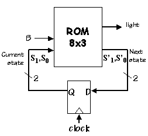

Lab 3: Finite State Machines
When entering numeric values in the answer fields, you can use integers (1000, 0x3E8, 0b1111101000), floating-point numbers (1000.0), scientific notation (1e3), engineering scale factors (1K), or numeric expressions (3*300 + 100).
Problem 1. FSMs
A possible implementation of a finite state machine with two inputs and one output is shown below.
- If the register is 5 bits wide (i.e., k = 5) what is the appropriate size of the ROM? Give the number of locations and the number of bits in each location.
- If the register is 5 bits wide what is the maximum number of states in an FSM implemented using this circuit?
- What is the smallest possible value for the ROMʼs contamination delay that still ensures the necessary timing specifications are met?
- Assume that the ROMʼs \(t_{\textrm{CD}} = 3\textrm{ns}\). What is the shortest possible clock period that still ensures that the necessary timing specifications are met?
Problem 2. State Transition Diagram
Shown below is a state transition diagram for an FSM, F, with a single binary input B. The FSM has a single output, a light which is on for the three states marked by a gray dot. The starting state is marked by the heavy circle.
- Is there a synchronizing sequence of inputs which will return this FSM from an unknown state to its starting state?
- Does this FSM have a pair of equivalent states that may be merged to yield a 3-state FSM?
-
The following circuit is used to implement the above 4-state FSM:
 It is known that the starting state of the 4-state FSM corresponds to 00 on the state variable input, and the light output is 1 when the light is to be on. What is the value of the light output when all three inputs to the ROM are zero?
- Fill in the unspecified rows of the following truth table so that it implements the state transition diagram. You will need to enter some combination of three zeros or ones in each field. Other characters in the fields (e.g., spaces) will be ignored. Remember the starting state is 00.
|
Problem 3. Design problem: Well-formed parenthesis string checker
In 1936 Alan Turing described the "a-machine", a device that performed computations on a string of symbols according to a simple set of manipulation rules enumerated in the form of a finite-state machine (FSM). The machine consisted of
- ...an unlimited memory capacity obtained in the form of an
infinite tape marked out into squares, on each of which a symbol could
be printed. At any moment there is one symbol in the machine; it is
called the scanned symbol. The machine can alter the scanned symbol
and its behavior is in part determined by that symbol, but the symbols
on the tape elsewhere do not affect the behavior of the
machine. However, the tape can be moved back and forth through the
machine, this being one of the elementary operations of the
machine. Any symbol on the tape may therefore eventually have an
innings. (Turing, 1948)
We now refer to this device as a Turing Machine (TM) and use it as our definition for what it means to be computable, i.e., we believe (Churchʼs Thesis) that a function is algorithmically computable if and only if itʼs computable by a TM.
The goal of this lab is write the FSM controller for a TM that checks to see if the string of left and right parentheses it finds on its input tape "balance".
The TM has a doubly-infinite tape with discrete symbol positions (cells) each of which contains one of a finite set of symbols. The control FSM has one input: the symbol found in the current cell. The FSM produces several outputs: the symbol to be written into the current cell and a motion control that determines how the head should move. In our simulation, the tape is displayed horizontally, so the tape can move left, right, or stay where it is.
The operation of the TM is specified by a file containing one or more of the following statements:
// comment
-
C++-style comment: ignore characters starting with the "//" and
continuing to the end of the current line.
/* ... */
-
C-style comment: ignore characters between "/*" and "*/". Note that
the ignored characters may include newlines; this type of comment can
be used to comment-out multiple lines of your file.
symbols symbol...
-
Declare one or more tape symbols. The symbol "-" (dash) is predefined
and is used to indicate that a tape cell is blank. You have to
declare symbols you use in an action statement (see below). A symbol
can be any sequence of non-whitespace characters not including "/", "\", or
the quote character. If you want to declare a symbol containing
whitespace, "/" or quote, you must enclose the symbol in quotes. You
can have more than one symbols statement in your file.
states state...
-
Declare one or more states. There are two predefined states: "*halt*"
and "*error*". The TM simulation will stop if either of these states
is reached. The "*error*" state is useful for indicating that the TM
has halted due to an unexpected condition. You can have more than one
states statement in your file. The first state specified by
the first states statement is the starting state for the TM.
action state symbol newstate writesymbol motion
-
Specify the action performed by the TM when the current state
is state and the current symbol
is symbol. First the TM will write writesymbol into
the current cell of the tape. Then the tape is moved left if "l" is
specified for the motion, right if "r" is specified and remain where
it is if "-" is specified. Finally the current state of the control
FSM is changed to newstate and the TM searches for the next applicable
action. If newstate is "*halt*" or "*error*", the TM simulation
stops. If there is no action specified for the current state and
current symbol, the TM enters the "*error*" state. Note that you have
to declare any symbols or states you use in an action
statement -- this requirement is helpful in catching typos.
tape name symbol...
-
Specifies the initial configuration of a TM tape, each tape has a
name. The various names are displayed as a set of radio buttons at
the bottom of the TM animation -- you can select which tape is loaded at
reset by clicking on one of the buttons. You can specify which cell
of the tape is to be current cell after reset by enclosing the
appropriate symbol in square brackets. For example, an initial tape
configuration called "test" consisting of three non-blank cells with
the head positioned over the middle cell is specified by
tape test 1 [2] 3If no initial head position is specified, the head is positioned over the leftmost symbol on the tape.
result name symbol...
-
Specifies the expected head position and contents of the tape after
the TM has finished processing the initial tape configuration called
name. This statement is used by the checkoff system to verify that
your TM has correctly processed each of the test tapes. Whenever the
TM enters the "*halt*" state, the final tape configuration is checked
against the appropriate result statement if one has been specified and
any discrepancies will be reported in the status display at the bottom
of the TMSim window.
result1 name symbol
-
Like result except that only the current symbol is checked against the
specified value.
Hereʼs an example file that defines a control FSM with three states (s1, s2 and s3) and two possible tape symbols: "1" and "-" (recall that the "-" symbol is predefined). There is a single tape configuration defined called "test" which consists of a blank tape. The final tape configuration is expected to be a tape containing six consecutive "1" symbols with the head positioned over the second "1". Note that there is an action declared for each possible combination of the three states and two tape symbols.
// 3-state busy beaver Turing Machine example
// See how many 1's we can write on a blank tape using
// only a three-state Turing Machine
states s1 s2 s3 // list of state names, first is starting state
symbols 1 // list of symbols (- is blank cell)
tape test - // initial tape contents, blank in this case
result test 1 [1] 1 1 1 1 // expected result
// specify transistions: action state symbol state' write move
// state = the current state of the FSM
// symbol = the symbol read from the current cell
// state' = state on the next cycle
// write = symbol to be written into the current cell
// move = tape movement ("l"=left, "r"=right, "-"=stay put)
action s1 - s2 1 r
action s1 1 s3 1 l
action s2 - s1 1 l
action s2 1 s2 1 r
action s3 - s2 1 l
action s3 1 *halt* 1 r
Youʼll find an instance of TMSim, our TM simulator, at the bottom of this webpage. Hereʼs what the TM simulator looks like:
The TM display consists of the following parts:
Simulator control: The five buttons are, respectively:
-
reset TM and tape to initial state;
step back to previous state and tape configuration
run the simulation for multiple steps
halt a running simulation
run the simulation for a single step
State display: shows the current tape contents, head position and current state of the controlling FSM. The number of simulation steps is displayed on the left, just below the tape. The next action to be performed, as determined by the current state and tape symbol, is highlighted in your design file.
Test selection: radio button to select which test tape to use. A will also be displayed. Clicking on will run all the test tapes and, if they all pass, youʼll be able to submit your design file online.
Well-formed parenthesis string checker
Your task is to write the control FSM for a TM that determines if the parenthesis string on its input tape is balanced. The initial position of the head will be at the leftmost non-blank symbol on the tape, i.e., at the left end of the parenthesis string. Your TM should halt with a current symbol of "1" if the parens balance, or a current symbol of "0" if the parens donʼt balance. The head should be positioned over the "0" or "1" on the tape. Note that there are no constraints on what the rest of the tape contains.
NOTE: TMs that simply use some fixed number of states to count the number of unmatched open parentheses would not be able handle an arbitrary-length inputs and so do not qualify as acceptable solutions. The staff will check this constraint during the check-off meeting.
Use the TMSim simulator below to enter your design in the "Paren Checker" tab. The initial contents of the tab are a sequence of test tapes which must be processed successfully by your TM. To run the tests, click "TMSim Assemble" and then "Checkoff". If all the tests pass, then clicking will give you credit for completing this problem. Please see the note on scoring at the end of this problem.
Note that youʼre welcome to add your own test tapes while debugging your implementation, but youʼll need to comment them out before running the checkoff tests (otherwise the checksum mechanism will get confused).
Scoring: The number of points youʼll receive at the Check-off meeting is determined by the number of states in your TM definition:
-
4 points: 2 states
3 points: 3 states
2 points: 4 states
1 point: 5 or more states
"Counting" solutions do not receive any credit.
Problem 4. Design problem: Sequential Logic
Your task is to design a sequential logic circuit that implements the FSM shown in the state transition diagram below:
The sequential circuit has three inputs:
- CLK. One rising clock edge the FSM should advance to the next state which is determined from current state, the RESET input and the IN input.
- IN. A simple binary input that determined which, along with the current state, selects which transition is chosen from the state transition diagram.
- RESET. When 1 at the rising edge of CLK, the FSM should transition to the SA state regardless of the current state and value of IN.
In the test, the values of IN and RESET are provided 10ns before the rising edge of CLK, which should provide sufficient time for them to processed by logic or a ROM and influence the value for the next state.
The values of the two outputs, U and V, are determined by the current state and are as shown in the state transition diagram.
The details of the implementation are up to you. Of course, youʼll need some number D registers to hold the current state. The next-state and output logic could be logic gates (see L06 slides 23 and 24) or our "standard" ROM plus register setup (see L06 slide 11).
The steps youʼll need to follow to complete the design are outlined on slides 8 and 9 of L06. See the diagram on slide 11 of L06 for one way to handle setting an initial state during reset.
The Memory component can be used to build a read-only memory (ROM). You can insert a memory component into your schematic by clicking on the "MEM" icon in the schematic tab and dragging it onto the schematic. Double-click the memory component to change its properties. Please the see documentation for the Memory component at the end of the Standard Cell Library datasheet.
To build a ROM, set the memory component to have a single port with the desired number of address inputs and data outputs. Connect its CLK and WE inputs to 0ʼ1, which will disable the ability to write into the memory, making it read-only. And connect its OE input to 1ʼ1 which will enable the D outputs:
As described in the datasheet, you can edit the "Contents" property to specify the contents of each memory location. For example, to fill the first 4 locations of a 4-bit-wide ROM to the binary values 0000, 0101, 1010, and 1111, you could enter the following into the Contents property:
// comments are allowed, don't count as content lines // 1 line per ROM location, starting at address 0 0b0000 // binary value 5 // decimal value 0xA // hexadecimal value 0b1_111 // binary value, _ is ignored (useful for formatting)
Use the Jade instance below to enter your design. To complete this design problem, select the /fsm/fsm module and click in the Jade toolbar and the built-in tester will either report any discrepancies between the expected and actual outputs, or, if your design is correct, it will record the test passed.
The tests verify that all the state transitions are correct by checking the values of U and V while the circuit is processing a sequence of IN values. You can select the "Test" tab for the /fsm/fsm to see the input sequence and the expected values of U and V at each clock cycle. The IN is changed before the rising edge of the clock and the values of U and V are checked just after the rising clock edge (i.e., after the most-recent value of IN has been processed). There are comments on each test line indicating what the state of the FSM should be after processing the new IN value.